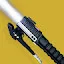

推荐者：
yester言泽龟刀猎
 猎人 · 棱镜 · 强度S29 · 凯旋纪念碑
猎人 · 棱镜 · 强度S29 · 凯旋纪念碑
圣贤2配合光剑快速回转复兴曲腹蛛
适用环境
标签
# 龟刀猎 推荐人：yester言泽 描述：圣贤2配合光剑快速回转复兴曲腹蛛 更新：2026.9.1 场景：地牢、宗师终极、日常、通用 定位：清怪、续航、功能 分支：棱镜 类别：强度 核心：英勇利刃 2：核心之击 ## 职业 职业：猎人 超能：黄金枪：神枪手 星相：潇洒行刑者、飞升 碎片：保护琢面、使命琢面、毁灭琢面、勇气琢面、希望琢面 手雷：暮域手雷 近战：线织尖刺 职业技能：特技闪身 ## 武器 异域武器：英勇利刃 2：核心之击 传说武器：铭纹-41 | 自动填装枪套、羸弱能量球 传说武器：拜拜咯 | 切割、羸弱能量球 ## 护甲 异域护甲：复兴之灵、曲腹蛛之灵 套装：双重王冠 2 件 × 圣贤保护者 2 件 头盔：重型弹药斥候、重型弹药搜寻者、动能虹吸 护臂：缚丝灵巧、鼓舞爆弹、近战洗礼 胸甲：震荡阻尼器、近战伤害抗性、灼烧抗性 腿部：复原、宽恕、动能武器激涌 职业物品：强力吸引、特殊终结技、收割者 ## 神器 神器：加密数据盘 模组：苦痛之力、动能合成、电介质、组合银白利刃、奇点利刃、刀剑风暴连击、虚空感染 ## 六维 六维：生命 ~ ｜ 近战 ~ ｜ 手雷 100 ｜ 超能 ~ ｜ 职业 100 ｜ 武器 150+ ## 注解 通过圣贤2和光剑快速回转手雷，保证了复兴之灵和曲腹蛛之灵的全程覆盖，通过拜拜咯右键产球+使命琢面获得恢复，或王冠2+动能合成提供治疗，软减+硬减让配装的整体生存得到了极大提升，在极高压环境也能做到血条不动。 选择王冠2回血可将拜拜咯替换为急切翻新等通用武器。护甲模组根据实际需求更换洗礼、元素抗性或弹药拾取模组。 如果减伤溢出，备选可选择光能+曲腹蛛，配合vog四件套+烈日超能获得恢复。
职业
武器
神器模组
护甲
- 生命~
- 近战~
- 手雷100
- 超能~
- 职业100
- 武器150+
腿部
注解
通过圣贤2和光剑快速回转手雷，保证了复兴之灵和曲腹蛛之灵的全程覆盖，通过拜拜咯右键产球+使命琢面获得恢复，或王冠2+动能合成提供治疗，软减+硬减让配装的整体生存得到了极大提升，在极高压环境也能做到血条不动。
选择王冠2回血可将拜拜咯替换为急切翻新等通用武器。护甲模组根据实际需求更换洗礼、元素抗性或弹药拾取模组。
如果减伤溢出，备选可选择光能+曲腹蛛，配合vog四件套+烈日超能获得恢复。